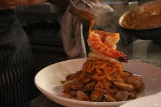

Angry Penne
Angry Penne is an Italian restaurant located in Garapan. It offers a variety of dishes from pastas, pizza, and desserts as well. The atmosphere there is also very relaxing and the customer service is always top-notch.
What I Love:
- Their Penne Aribiata
- Their Margarita Pizza
- The friendly customer service